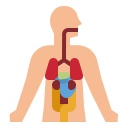

Disciplina de Ciências 2º Olavo Bilac
O objetivo da ciência é explicar, descrever e prever os fenômenos a partir do desenvolvimento de procedimentos metodológicos que possam ser constantemente verificados e reproduzidos.
-

Anatomia
-

Coração
-
Fisiologia
-
Natureza
Anatomia
É a ciência que estuda, macro e microscopicamente, a constituição e o desenvolvimento do corpo humano. Anatomia é uma palavra grega que significa cortar em partes, cortar separado sem destruir os elementos componentes.
Coração
O coração é uma espécie de bomba que impulsiona mais de 70 mil litros de sangue por dia para que circule por todo o organismo. O coração é um órgão muscular oco, em forma de cone e relativamente pequeno: tem mais ou menos o tamanho de um punho fechado e pesa entre 250g e 300g nos adultos.
Fisiologia
A Fisiologia (do grego physis = natureza e logos = estudo) é o estudo das funções e do funcionamento normal dos seres vivos, bem como dos processos físico-químicos que ocorrem nas células, tecidos, órgãos e sistemas dos seres vivos sadios.
Natureza
Se refere à vida e aos elementos e fenômenos presentes no meio ambiente. Em geral, não inclui as obras e consequências das atividades humanas. A palavra provém do latim natura, que significa “qualidade essencial, disposição inata, o curso das coisas e o próprio universo”.